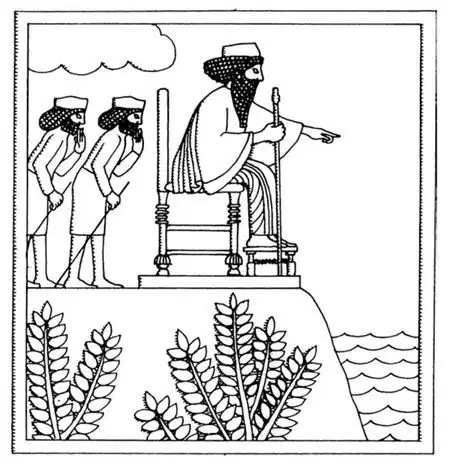

26
One Against a Thousand
以一挡千

THERE is a little narrow passageway with the mountains on one side and the water on the other through which the Persians had to go to reach Athens. This pass is called Thermopylae, and you might guess what Thermopylae means if you notice that the first part is like Thermos bottle, which means hot bottle. As a matter of fact, Thermopylae meant Hot Gateway and was so named because this natural gateway to Greece had hot springs near by.
The Greeks decided that it was best to stop the Persians at this gate—to go to meet them there first before they reached Athens. In such a place a few Greek soldiers could fight better against a much larger number.
It also seemed wise to send picked Greek troops to meet the Persians, the very best soldiers in Greece with the very bravest general to lead them.
The Spartan king, who was named Leonidas—which in Greek means like a lion was chosen to go to Thermopylae, and with him seven thousand soldiers— seven thousand soldiers to block the way of two million Persians! Three hundred of these were Spartans, and a Spartan was taught that he must never surrender, never give up. A Spartan mother used to say to her son:
“Come back with your shield or on it.”
When Xerxes found his way blocked by this ridiculously small band of soldiers, he sent his messengers ordering them to surrender, to give themselves up.
What do you suppose Leonidas replied?
It was what we should expect a Spartan to answer, brief and to the point; that is, laconic . He said simply:
“Come and take us.”
As there was nothing left for Xerxes to do but fight, he started his army forward.
For two days the Persians fought the Greeks, but Leonidas still held the pass, and the Persians were unable to get through.
Then a Greek traitor and coward, who thought he might save his own life and be given a rich prize by Xerxes, told that king of a secret path over the mountains by which he and his army might slip through and get around Leonidas and his soldiers who blocked the way.
The next morning Leonidas learned that the Persians had found the secret path and were already on the way to pen him in from behind. There was still a chance, however, for his men to escape, and Leonidas told all those who wanted to do so to leave. Those who remained knew that the fight was absolutely hopeless and that it meant certain death for all of them. In spite of this, however, one thousand men, including all the three hundred Spartans stood by their leader, for, said they:
“We have been ordered to hold the pass, and a Spartan obeys orders, and never surrenders, no matter what happens.”
There Leonidas and his thousand men fought to the bitter end until all except one of their number was killed.
The gateway to the city of Athens was now open, and things looked very bleak for the Greeks, for there was nothing to prevent the Persians from marching over the dead bodies of Leonidas and his men straight on to Athens.
The Athenians, wondering what was to happen to them, hurriedly went to the oracle at Delphi and asked what they should do.
The oracle replied that the city of Athens itself was doomed, that it would be destroyed, there was no hope for it, but that the Athenians themselves would be saved by wooden walls.
This answer, as was usually the case in whatever the oracle said, was a riddle, the meaning of which seemed hard to solve. Themistocles, however, said that he knew the answer. You remember that it was he who had been working so hard to have a fleet of ships built. Themistocles said that the oracle meant these ships when it spoke of the wooden walls.
The Athenians, following the supposed advice of the oracle, left their city as Themistocles told them and went on board the ships, which were not far away, in a bay called Salamis.
The Persian army reached Athens and found it deserted. They burned and destroyed the city as the oracle said. Then they marched on to the Bay of Salamis, where the Athenians were on board the ships. There, on a hill overlooking the bay, Xerxes had a throne built for himself so that he could sit, as if in a box at the theater looking at a play, and watch his own large fleet destroy the much smaller one of the Greeks with all the Athenians on board.
The Greek fleet was commanded, of course, by Themistocles. His ships were in this narrow bay or strait of water, somewhat in the same way that the soldiers of Leonidas had been in the narrow valley at Thermopylae.
Themistocles, seeing that the Bay of Salamis looked somewhat like the Pass of Thermopylae, had an idea. He made believe he was a traitor like the traitor at Thermopylae and sent word to Xerxes that if the Persian fleet divided and one half stayed at one end of the strait and the other half closed off the other end of the strait, the Greeks would be penned in between and caught as in a trap.

Xerxes on his throne watching Battle of Salamis
坐在宝座上观看萨拉米斯战役的薛西斯
Xerxes thought this a good idea, so he gave orders to have his ships do as Themistocles had suggested. But Xerxes, sitting smiling on his throne, had the surprise of his life. The result was just the opposite of what he had expected. With the Persian fleet separated in two parts, the Greeks in between could fight both halves of the divided fleet separately, and the space was so narrow that the Persians' ships got in the way of each other and rammed and sank their own boats.
The Persian fleet was completely beaten, and the proud and boastful Xerxes, with most of his army and all the navy that was left, made a hasty retreat back to Persia the way they had come.
This was the last time the Persians ever tried to conquer little Greece.
If Themistocles had not had his way and built such a strong fleet, what do you think would have become of Athens and Greece!
【中文阅读】
波斯人要到雅典必须穿过一个狭窄的通道，通道一边是群山，一边是河水。这个通道叫Thermopylae （塞莫皮莱），如果你注意到这个词的第一部分和thermosbottle （热水瓶）这个词有点像 ［1］ ，你大概就能猜出它是什么意思了。事实上，塞莫皮莱意思是“温泉关”，之所以叫这个名字，是因为这个通往希腊的天然关口附近有滚热的温泉。
希腊人决定最好在这个关口阻挡住波斯人——抢在他们到达雅典前，先在那里迎战他们。在这样一个据点，少数希腊士兵就可以胜过人数占绝对优势的敌人。
希腊人决定派出自己的精兵良将，一支由最勇猛的将军率领的全希腊最好的战士组成的军队去迎战波斯军队，这似乎是一个明智的决定。
斯巴达国王，名叫列奥尼达——这个名字在希腊语里的意思是“像一头雄狮”——被大家推举出来去温泉关，七千名士兵随同他前往——七千名士兵要去抵挡二百万人的进攻！其中有三百人是斯巴达人，而斯巴达人所受的教育就是永不投降，永不屈服。一个斯巴达母亲过去经常对儿子说：
“要么举着你的盾回来，要么躺在上面回来。”
当薛西斯发现自己前行的路被这一群少得可怜的士兵挡住时，就派使者命令他们投降，放弃抵抗。
你们猜列奥尼达怎么回答的？
那是我们意料之中的斯巴达人的回答，简洁扼要，也即“拉科尼亚回答”，他简单地说了句：
“来抓我们吧。”
除了开战，薛西斯别无他法，只得命令军队向前挺进。
波斯人和希腊人激战了两天，但是列奥尼达仍然据守关口，波斯人无法通过。
这时，希腊一个怕死的叛徒为了活命和得到薛西斯的厚赏，向薛西斯国王泄露
了能越过那座山的一条隐蔽的小路，由着这条路，他和他的军队可以悄悄溜过去包围守关的列奥尼达和他的士兵。
第二天早晨，列奥尼达得知波斯人已经发现了那条秘道，而且已经从后面向他包抄过来。不过，他的士兵这时要逃离还来得及，于是列奥尼达叫那些想要逃走的人马上离开。坚持留下来的人心里明白继续战斗必输无疑，这也意味着他们所有的人必死无疑。尽管如此，仍有一千名士兵忠于自己的领袖，其中包括所有三百名斯巴达人，因为他们说：
“我们接到命令来守关，不管发生什么，斯巴达人都会服从命令，绝不投降。”
列奥尼达和他的一千名勇士苦战到最后，直至全部阵亡，只有一人活了下来。
通往雅典城的通道畅通无阻了，希腊人的处境看上去一片黯淡，因为没有任何东西可以阻挡波斯人踏着列奥尼达将士们的尸体朝着雅典长驱直入了。
雅典人不知道将有什么灾难降临在自己身上，就慌忙跑到德尔菲的神庙请求神谕告诉他们该怎么办。
神谕回答说雅典城在劫难逃，注定要被摧毁，没有任何希望了，但是雅典人自己却会被木墙拯救。
这个回答是个难解之谜，神谕任何一个回答，通常总是这样让人费解。但是，泰米斯托克利却说他懂神谕的意思。你还记得吧，就是他为了让一支舰队组建起来一直辛苦工作着。泰米斯托克利说神谕所讲的木墙就是指这些舰船。
雅典人遵照神谕那个被信以为真的建议，听从了泰米斯托克利的吩咐，离开了他们的城市，登上舰船躲避，船就停在离城不远的一个叫萨拉米斯的海湾里。
波斯大军到达了雅典，却发现城内空无一人。如神谕所说，他们烧毁了雅典。随后他们又朝着雅典人舰船停泊的萨拉米斯海湾进发。在一个俯瞰海湾的小山上，薛西斯命人给自己建了个宝座，这样他就可以坐在那儿观看自己的庞大舰队摧毁满载着全城雅典人的、小小的希腊舰队，就好像在剧院的包厢里看一出戏。
希腊的舰队当然由泰米斯托克利统率。他的船只停在狭窄的海湾，或者说狭窄的水道里，有点像列奥尼达的士兵守在温泉关的狭窄山谷里一样。
泰米斯托克利看到萨拉米斯海湾和温泉关通道有几分相似，就想出了个主意。他假装自己是个叛徒，和温泉关战役中的那个叛徒一样投靠波斯人，他捎信给薛西斯献计说，如果波斯舰队分为两部分，一半守在海湾的一头，另一半封锁住海湾的另一头，希腊人就会被夹在其中，就像落入陷阱里的猎物一样被逮到。
薛西斯觉得这是个好主意，于是下令要他的舰船按照泰米斯托克利建议的那样去做。但是，微笑着坐在宝座上的薛西斯，遇到了他人生中最意想不到的事。战役结果正和他预期的相反。随着波斯舰队一分为二，中间的希腊人恰好可以分别攻击分在两头的波斯舰队，由于空间非常狭小，波斯人的舰船彼此挡路，反而把自己的船只撞沉了。
波斯舰队被彻底打败了，骄横自大的薛西斯带着他的大部分陆军和所有幸存的海军从原路狼狈地撤回了波斯。
这是波斯人最后一次企图征服弱小的希腊。
如果泰米斯托克利没有权力可以自主行事，就不能建起这样一支强大的舰队，那你想雅典和希腊会是怎样的命运啊！